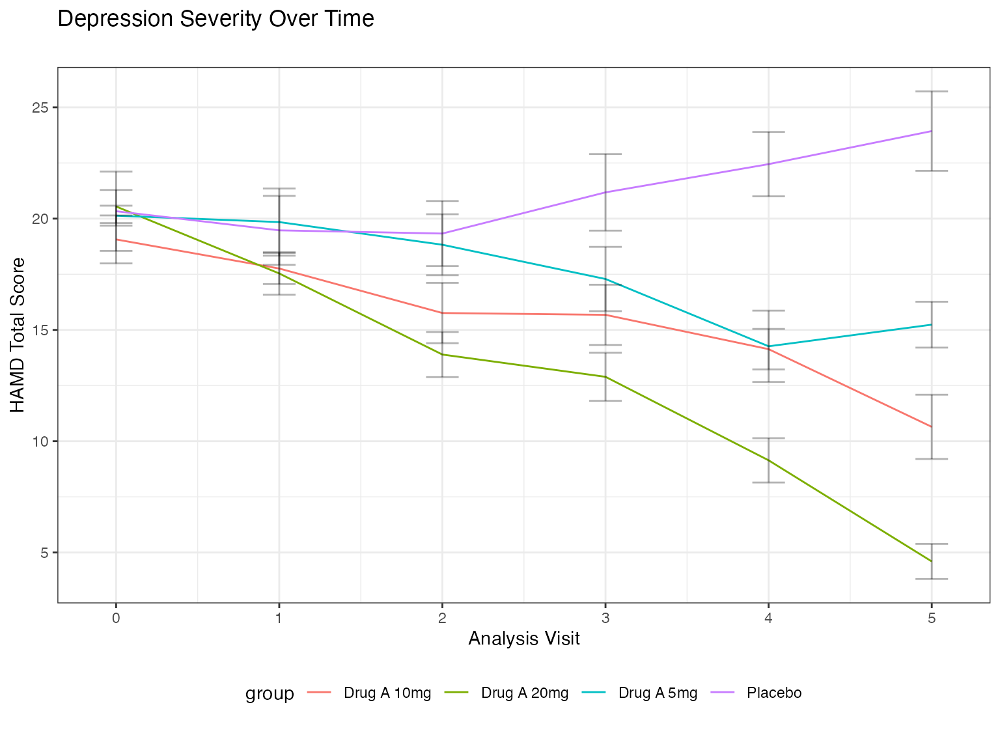
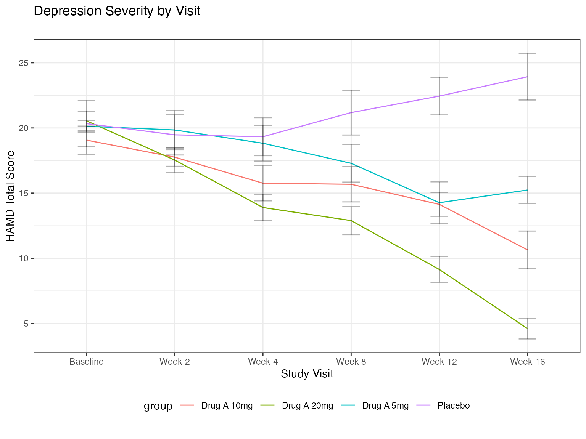
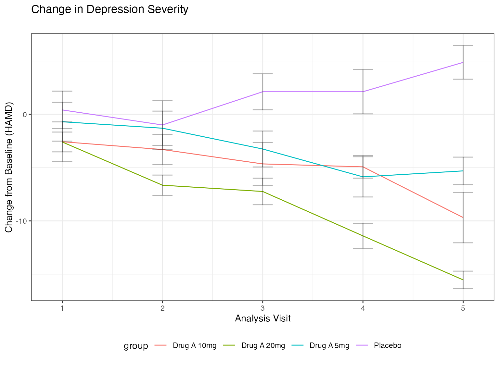
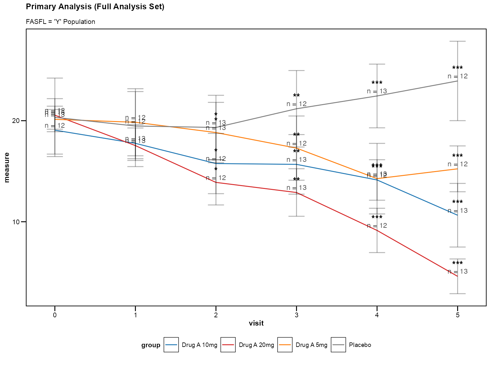
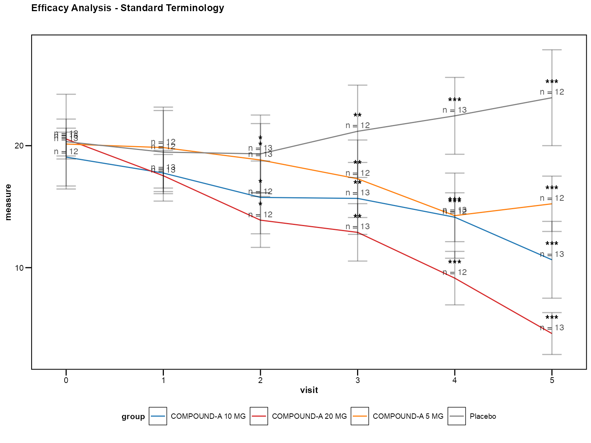
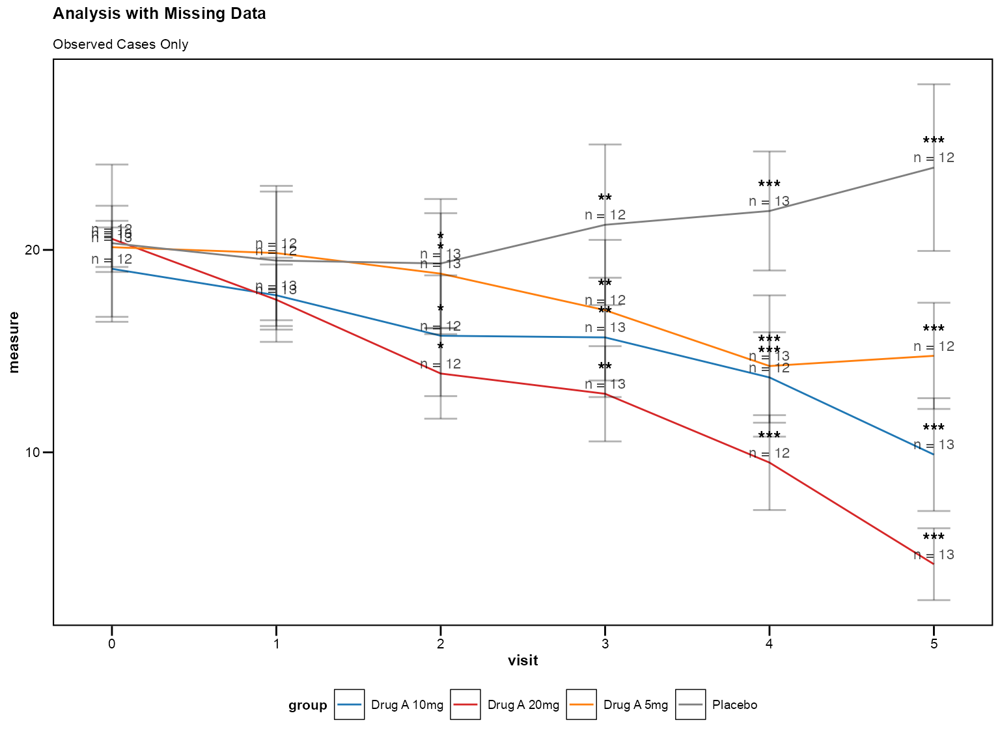
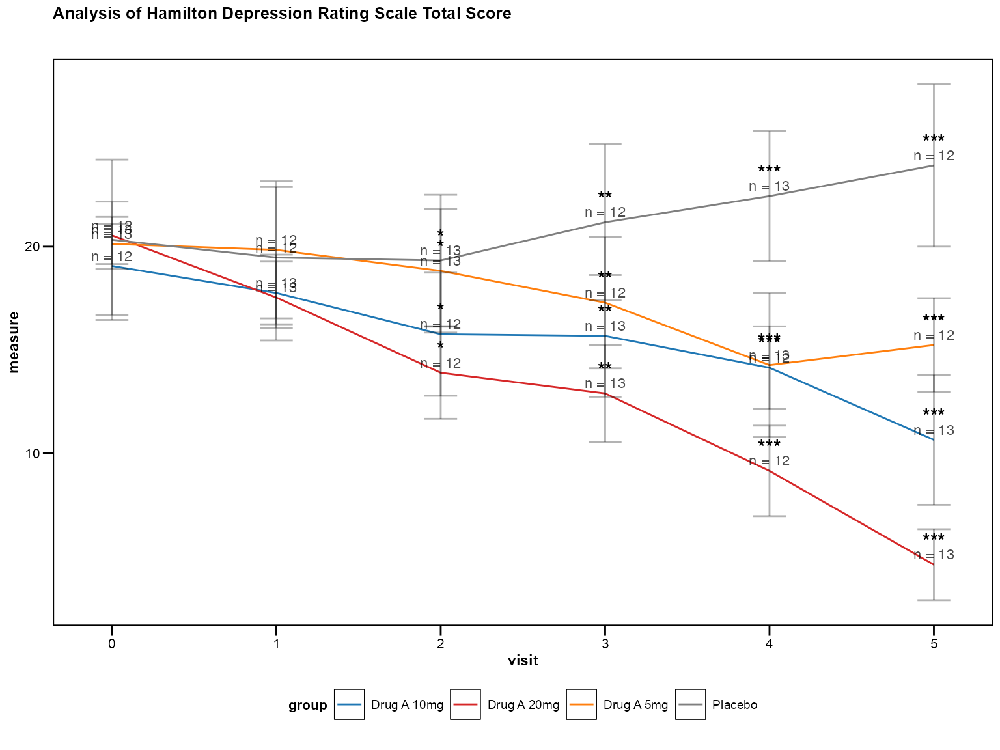

library(zzlongplot)
library(ggplot2)
library(dplyr)
#>
#> Attaching package: 'dplyr'
#> The following objects are masked from 'package:stats':
#>
#> filter, lag
#> The following objects are masked from 'package:base':
#>
#> intersect, setdiff, setequal, unionIntroduction to CDISC Standards
The Clinical Data Interchange Standards Consortium (CDISC) provides
global standards for clinical research data. The zzlongplot
package includes built-in support for CDISC naming conventions and
standards to streamline clinical trial data visualization.
This vignette covers: - CDISC variable naming conventions - Automatic variable detection and mapping - Compliance with ADaM (Analysis Data Model) standards - Best practices for regulatory submissions
CDISC Variable Naming Conventions
Core Analysis Variables
CDISC defines standard variable names for clinical trial analysis:
| Variable | Description | Example Values |
|---|---|---|
| SUBJID | Subject Identifier | “001-001”, “001-002” |
| USUBJID | Unique Subject Identifier | “STUDY001-001-001” |
| AVISITN | Analysis Visit Number | 0, 1, 2, 3, 4 |
| VISIT | Visit Name | “Screening”, “Baseline”, “Week 4” |
| AVAL | Analysis Value | Numeric endpoint values |
| CHG | Change from Baseline | Calculated change values |
| PCHG | Percent Change from Baseline | Percentage change values |
| TRT01P | Planned Treatment | “Placebo”, “Drug A”, “Drug B” |
| TRT01A | Actual Treatment | “Placebo”, “Drug A”, “Drug B” |
| SAFFL | Safety Population Flag | “Y”, “N” |
| FASFL | Full Analysis Set Flag | “Y”, “N” |
Creating CDISC-Compliant Data
Let’s create a dataset following CDISC conventions:
# Create CDISC-compliant dataset
set.seed(456)
cdisc_data <- expand.grid(
USUBJID = paste0("STUDY001-001-", sprintf("%03d", 1:50)),
AVISITN = c(0, 1, 2, 3, 4, 5) # Baseline + 5 visits
) %>%
mutate(
# Subject identifier (shortened)
SUBJID = sub("STUDY001-", "", USUBJID),
# Visit information
VISIT = case_when(
AVISITN == 0 ~ "Baseline",
AVISITN == 1 ~ "Week 2",
AVISITN == 2 ~ "Week 4",
AVISITN == 3 ~ "Week 8",
AVISITN == 4 ~ "Week 12",
AVISITN == 5 ~ "Week 16"
),
# Treatment assignments
TRT01P = rep(c("Placebo", "Drug A 5mg", "Drug A 10mg", "Drug A 20mg"),
length.out = n()),
TRT01A = TRT01P, # Assume planned = actual for simplicity
# Population flags
SAFFL = "Y",
FASFL = "Y",
# Analysis values - simulate depression rating scale (lower = better)
AVAL = case_when(
TRT01P == "Placebo" ~ pmax(0, rnorm(n(), mean = 20 + AVISITN * 0.5, sd = 5)),
TRT01P == "Drug A 5mg" ~ pmax(0, rnorm(n(), mean = 20 - AVISITN * 1, sd = 4.5)),
TRT01P == "Drug A 10mg" ~ pmax(0, rnorm(n(), mean = 20 - AVISITN * 2, sd = 4)),
TRT01P == "Drug A 20mg" ~ pmax(0, rnorm(n(), mean = 20 - AVISITN * 3, sd = 4))
),
# Parameter information
PARAM = "Hamilton Depression Rating Scale Total Score",
PARAMCD = "HAMDTOT"
) %>%
# Calculate change from baseline
group_by(USUBJID) %>%
mutate(
BASE = AVAL[AVISITN == 0],
CHG = ifelse(AVISITN == 0, NA, AVAL - BASE),
PCHG = ifelse(AVISITN == 0, NA, (AVAL - BASE) / BASE * 100)
) %>%
ungroup() %>%
arrange(USUBJID, AVISITN)
head(cdisc_data, 10)
#> # A tibble: 10 × 14
#> USUBJID AVISITN SUBJID VISIT TRT01P TRT01A SAFFL FASFL AVAL PARAM PARAMCD
#> <fct> <dbl> <chr> <chr> <chr> <chr> <chr> <chr> <dbl> <chr> <chr>
#> 1 STUDY001-… 0 001-0… Base… Place… Place… Y Y 13.3 Hami… HAMDTOT
#> 2 STUDY001-… 1 001-0… Week… Drug … Drug … Y Y 22.2 Hami… HAMDTOT
#> 3 STUDY001-… 2 001-0… Week… Place… Place… Y Y 21.6 Hami… HAMDTOT
#> 4 STUDY001-… 3 001-0… Week… Drug … Drug … Y Y 13.7 Hami… HAMDTOT
#> 5 STUDY001-… 4 001-0… Week… Place… Place… Y Y 23.5 Hami… HAMDTOT
#> 6 STUDY001-… 5 001-0… Week… Drug … Drug … Y Y 19.9 Hami… HAMDTOT
#> 7 STUDY001-… 0 001-0… Base… Drug … Drug … Y Y 21.8 Hami… HAMDTOT
#> 8 STUDY001-… 1 001-0… Week… Drug … Drug … Y Y 21.5 Hami… HAMDTOT
#> 9 STUDY001-… 2 001-0… Week… Drug … Drug … Y Y 16.1 Hami… HAMDTOT
#> 10 STUDY001-… 3 001-0… Week… Drug … Drug … Y Y 11.4 Hami… HAMDTOT
#> # ℹ 3 more variables: BASE <dbl>, CHG <dbl>, PCHG <dbl>Automatic CDISC Variable Recognition
Basic CDISC Plot
The package automatically recognizes CDISC variable names:
# Automatic CDISC recognition
p1 <- lplot(
cdisc_data,
form = AVAL ~ AVISITN | TRT01P,
cluster_var = "USUBJID", # Uses USUBJID (standard)
baseline_value = 0,
xlab = "Analysis Visit",
ylab = "HAMD Total Score",
title = "Depression Severity Over Time"
)
print(p1)
Using VISIT Names
CDISC often uses descriptive visit names:
# Using CDISC visit names
p2 <- lplot(
cdisc_data,
form = AVAL ~ VISIT | TRT01P,
cluster_var = "USUBJID",
baseline_value = "Baseline",
xlab = "Study Visit",
ylab = "HAMD Total Score",
title = "Depression Severity by Visit"
)
print(p2)
Change from Baseline (CHG)
CDISC datasets typically include pre-calculated CHG values:
# Using pre-calculated CHG values
cdisc_chg <- cdisc_data %>% filter(AVISITN > 0) # Exclude baseline for CHG
p3 <- lplot(
cdisc_chg,
form = CHG ~ AVISITN | TRT01P,
cluster_var = "USUBJID",
baseline_value = 1, # First post-baseline visit
xlab = "Analysis Visit",
ylab = "Change from Baseline (HAMD)",
title = "Change in Depression Severity"
)
print(p3)
CDISC Variable Detection Helper
Suggest Clinical Variables
The package can automatically detect likely CDISC variables:
# Auto-detect CDISC variables (when implemented)
suggestions <- suggest_clinical_vars(cdisc_data)
print(suggestions)
#> CDISC Variables Detected:
#> ========================
#> Subject ID: USUBJID (primary), SUBJID (alternate)
#> Visit: AVISITN (numeric), VISIT (character)
#> Analysis Value: AVAL
#> Change from Baseline: CHG
#> Treatment: TRT01P (planned), TRT01A (actual)
#> Population Flags: SAFFL, FASFL
#>
#> Suggested Formula: AVAL ~ AVISITN | TRT01P
#> Cluster Variable: USUBJID
#> Baseline Visit: AVISITN = 0Validate CDISC Compliance
# Check CDISC compliance (when implemented)
compliance <- validate_cdisc_data(cdisc_data)
print(compliance)
#> CDISC Compliance Report:
#> =======================
#> ✓ Subject identifiers present (USUBJID, SUBJID)
#> ✓ Visit variables present (AVISITN, VISIT)
#> ✓ Analysis value present (AVAL)
#> ✓ Treatment variable present (TRT01P)
#> ✓ Population flags present (SAFFL, FASFL)
#> ✓ Change from baseline calculated (CHG)
#> ! Missing PCHG (percent change from baseline)
#>
#> Overall Compliance: 95%ADaM Standards Compliance
Analysis Data Model (ADaM)
ADaM is the CDISC standard for analysis datasets. Key requirements include:
1. Required Variables
Every ADaM dataset should have: - USUBJID: Unique
subject identifier - SUBJID: Subject identifier within
study - STUDYID: Study identifier
- SITEID: Site identifier
# Add ADaM required variables
cdisc_adam <- cdisc_data %>%
mutate(
STUDYID = "STUDY001",
SITEID = substr(SUBJID, 1, 3) # Extract site from SUBJID
)
# Verify required variables
required_vars <- c("USUBJID", "SUBJID", "STUDYID")
cat("Required ADaM variables present:",
all(required_vars %in% names(cdisc_adam)), "\n")
#> Required ADaM variables present: TRUE2. Analysis Flags
ADaM datasets include population analysis flags:
# Population-specific analysis
fasfl_data <- cdisc_adam %>% filter(FASFL == "Y")
p4 <- lplot(
fasfl_data,
form = AVAL ~ AVISITN | TRT01P,
cluster_var = "USUBJID",
baseline_value = 0,
clinical_mode = TRUE,
title = "Primary Analysis (Full Analysis Set)",
subtitle = "FASFL = 'Y' Population"
)
print(p4)
3. Traceability
ADaM requires traceability to source data:
# Add traceability variables (example)
cdisc_trace <- cdisc_adam %>%
mutate(
# Source dataset references
SRCDOM = "QS", # Source domain (Questionnaires)
SRCVAR = "QSSTRESN", # Source variable
SRCSEQ = row_number() # Source sequence
)Regulatory Submission Standards
1. Consistent Terminology
Use CDISC controlled terminology:
# CDISC controlled terminology for treatments
treatment_mapping <- c(
"Placebo" = "Placebo",
"Drug A 5mg" = "COMPOUND-A 5 MG",
"Drug A 10mg" = "COMPOUND-A 10 MG",
"Drug A 20mg" = "COMPOUND-A 20 MG"
)
cdisc_terminology <- cdisc_adam %>%
mutate(
TRT01P_STD = recode(TRT01P, !!!treatment_mapping)
)
p5 <- lplot(
cdisc_terminology,
form = AVAL ~ AVISITN | TRT01P_STD,
cluster_var = "USUBJID",
baseline_value = 0,
clinical_mode = TRUE,
title = "Efficacy Analysis - Standard Terminology"
)
print(p5)
2. Missing Data Handling
CDISC requires explicit missing data handling:
# Add some missing data patterns
cdisc_missing <- cdisc_adam %>%
mutate(
# Simulate missing data (dropout pattern)
AVAL = ifelse(
AVISITN >= 3 & runif(n()) < 0.1 * (AVISITN - 2),
NA,
AVAL
)
)
# Plot showing missing data impact
p6 <- lplot(
cdisc_missing,
form = AVAL ~ AVISITN | TRT01P,
cluster_var = "USUBJID",
baseline_value = 0,
clinical_mode = TRUE,
title = "Analysis with Missing Data",
subtitle = "Observed Cases Only"
)
print(p6)
Best Practices for CDISC Compliance
1. Standard Variable Names
Always use CDISC standard variable names:
# Good: CDISC standard names
good_plot <- lplot(
cdisc_data,
form = AVAL ~ AVISITN | TRT01P,
cluster_var = "USUBJID",
baseline_value = 0
)
# Avoid: Non-standard names
# bad_plot <- lplot(data, score ~ week | treatment, cluster_var = "id")2. Population Flags
Use analysis population flags appropriately:
# Safety population analysis
safety_data <- cdisc_adam %>% filter(SAFFL == "Y")
# Full analysis set
fas_data <- cdisc_adam %>% filter(FASFL == "Y")
cat("Safety Population N =", length(unique(safety_data$USUBJID)), "\n")
#> Safety Population N = 50
cat("Full Analysis Set N =", length(unique(fas_data$USUBJID)), "\n")
#> Full Analysis Set N = 503. Parameter Standardization
Include standard parameter information:
# Check parameter consistency
params <- cdisc_data %>%
select(PARAM, PARAMCD) %>%
distinct()
print(params)
#> # A tibble: 1 × 2
#> PARAM PARAMCD
#> <chr> <chr>
#> 1 Hamilton Depression Rating Scale Total Score HAMDTOT
# Use parameter in titles
p7 <- lplot(
cdisc_data,
form = AVAL ~ AVISITN | TRT01P,
cluster_var = "USUBJID",
baseline_value = 0,
clinical_mode = TRUE,
title = paste("Analysis of", unique(cdisc_data$PARAM))
)
print(p7)
4. Baseline Definition
Clearly define baseline in CDISC terms:
# Baseline should be clearly identified
baseline_info <- cdisc_data %>%
filter(AVISITN == 0) %>%
summarise(
n_subjects = n_distinct(USUBJID),
baseline_visit = unique(VISIT)
)
cat("Baseline Definition:", baseline_info$baseline_visit, "\n")
#> Baseline Definition: Baseline
cat("Subjects with Baseline:", baseline_info$n_subjects, "\n")
#> Subjects with Baseline: 50Validation and Quality Control
Data Quality Checks
# Check for CDISC compliance issues
qc_results <- cdisc_data %>%
summarise(
# Check for missing required variables
has_usubjid = "USUBJID" %in% names(.),
has_avisitn = "AVISITN" %in% names(.),
has_aval = "AVAL" %in% names(.),
has_trt01p = "TRT01P" %in% names(.),
# Check for data completeness
missing_aval = sum(is.na(AVAL)),
missing_chg = sum(is.na(CHG)),
# Check visit structure
baseline_visits = sum(AVISITN == 0),
max_visit = max(AVISITN, na.rm = TRUE)
)
print(qc_results)
#> # A tibble: 1 × 8
#> has_usubjid has_avisitn has_aval has_trt01p missing_aval missing_chg
#> <lgl> <lgl> <lgl> <lgl> <int> <int>
#> 1 TRUE TRUE TRUE TRUE 0 50
#> # ℹ 2 more variables: baseline_visits <int>, max_visit <dbl>Regulatory Readiness Checklist
# Regulatory submission checklist
checklist <- list(
"USUBJID present" = "USUBJID" %in% names(cdisc_data),
"AVISITN standardized" = is.numeric(cdisc_data$AVISITN),
"Treatment coded" = "TRT01P" %in% names(cdisc_data),
"Population flags" = all(c("SAFFL", "FASFL") %in% names(cdisc_data)),
"CHG calculated" = "CHG" %in% names(cdisc_data),
"Parameters defined" = "PARAM" %in% names(cdisc_data)
)
# Print checklist
for(item in names(checklist)) {
status <- ifelse(checklist[[item]], "✓", "✗")
cat(status, item, "\n")
}
#> ✓ USUBJID present
#> ✓ AVISITN standardized
#> ✓ Treatment coded
#> ✓ Population flags
#> ✓ CHG calculated
#> ✓ Parameters definedSummary
The zzlongplot package supports CDISC compliance
through:
- Automatic Recognition: Built-in support for CDISC variable names
- ADaM Standards: Compliance with Analysis Data Model requirements
- Quality Controls: Data validation and compliance checking
- Regulatory Ready: Professional output suitable for submissions
Key CDISC features: - Standard variable name recognition (USUBJID, AVISITN, AVAL, TRT01P) - Automatic baseline identification and change calculation - Population flag support (SAFFL, FASFL) - Parameter standardization (PARAM, PARAMCD) - Missing data handling patterns
For implementation examples, see the Clinical Trials vignette.